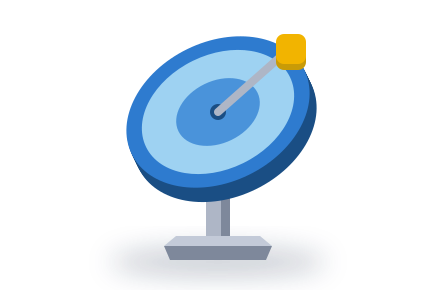
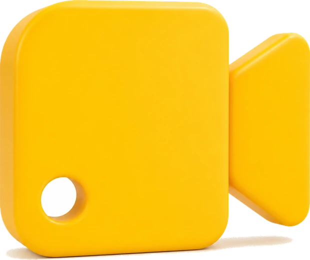

A closed-won lookalike workflow mines the deals you have already won to find your real ideal customer profile, then clones it. Instead of guessing who to target, you let your own CRM tell you who your best customers actually are, and go find more companies just like them.
Here is the idea behind it. Most companies define their ICP from a guess or a wish. They write down who they think they sell to, and it is often not who they actually win, so the outreach goes to the wrong accounts.
Your CRM already holds the answer. The pattern in your closed-won deals, the size, the industry, the tech stack, the use case, is your ICP, proven by revenue. A quick test: if fewer than 60% of your won deals match your stated ICP, your ICP is wrong.
The workflow pulls your won deals, and for bigger teams your highest-value customers, then runs lookalike modeling on them with Ocean.io across 35 million companies, widened by Discolike across 70 million more domains, to surface the accounts that look and behave just like your best ones.
From there it finds the decision-makers and the buying committee, verifies their contact details, and activates: outbound on the decision-makers, or full ABM with ads on the committee and outbound on the buyers.
It runs inside your own stack, so the pipeline it builds, and the data-true ICP it gives you, stays yours to keep.
Read it top to bottom: your CRM's won deals become a data-true ICP, Ocean.io and Discolike find the lookalikes, and outreach goes to the right people. Tap any tool or key term to see what it is and what it does here. Every step runs inside your own tools, not on a vendor's dashboard.
Closed-won lookalike turns the customers you already have into the ones you want next. Here is what changes the moment it is running.
It comes from the deals you actually won, not a guess. The pattern in your wins, proven by revenue.
Ocean.io searches 35 million companies to find the ones that look and behave like your best.
ABM puts you in front of the whole buying committee, often 11 people, not just one contact.
The data-true ICP and the pipeline it builds run inside your own stack, nothing rented.
And because every step runs in your own stack, the pipeline it builds stays yours.
We design, build, and run your closed-won lookalike system inside your own stack, so the deals you have already won become a steady source of new, on-profile pipeline.
Mining your closed-won deals tells you who your best customers are, who decides, and where to find more. Here is what surfaces.
The pattern in your closed-won deals is your real ICP. Not who you think you sell to, who you actually win. It is already in your CRM, waiting to be read.
Rank your wins by value, lifetime value, and retention, and the top tier tells you exactly where to concentrate. Bigger teams seed the model only from there.
Every best customer becomes a seed for hundreds of companies that look and behave just like them, drawn from 35 million in Ocean.io.
Ocean surfaces who actually signs at companies like yours, so the first email reaches the buyer, not a gatekeeper.
The other stakeholders, often 11 in enterprise deals, mapped by role, so ABM ads and outbound reach everyone who shapes the call.
Every lookalike is checked against your CRM, so you never pitch a current customer or step on an open deal. Fresh, on-profile accounts only.
The companies that look like your best customers are the ones most likely to become them. This finds them, at scale.
How we build the workflow inside your own stack, from kickoff to a system that runs itself. About a month to live, then it compounds.
Your stack is just the set of tools wired together to run this. A situational analysis decides the exact one. Here's what a signal-led outbound build typically uses.
The things teams ask before they build a signal-led outbound system.
It mines the deals you have already won to find your real ICP, then uses lookalike modeling to find companies that match your best customers. Instead of targeting who you think you sell to, you target who you actually win, and clone it into fresh pipeline.
Because most ICPs are written from a guess, not from data. The honest test: pull your last 12 months of closed-won and check how many match your stated ICP. If it is under 60%, the profile you are targeting is not the one that actually buys.
We seed Ocean.io with your best closed-won customers. It models them across 35 million companies and 330 million data points using machine learning, then returns accounts that look and behave like them, plus the likely decision-makers. Discolike widens the net further by reading real website content across 70 million more domains. Ocean.io is a Nebor partner.
Then we seed the model with all of your closed-won deals. With more clients, we get more tailored and use only your highest-value, highest-retention customers, so the lookalikes skew toward your most profitable segment.
Outbound runs direct sequences to the decision-makers across email and LinkedIn. ABM adds a layer: ads run on the whole buying committee, often 11 people, to build familiarity while outbound works the decision-makers. ABM suits larger, multi-stakeholder deals.
Your CRM (HubSpot, Salesforce, or Pipedrive) is the source, Clay orchestrates, Ocean.io and Discolike do the lookalike and committee work, BetterContact verifies emails and phones, and Instantly plus LinkedIn run the activation. The exact set depends on your stack.
Yes. It is built inside your own accounts and tools, and the data-true ICP it produces is yours. There is no platform to rent, and the pipeline it creates stays with you.
Closed-won lookalikes are one piece. Here are the other workflows we wire into your own stack.
Watch the news and press-release feeds for buying signals, and turn the matches into qualified leads in your CRM.
Explore →
Turn buying signals into personalized, verified outreach across email and LinkedIn the moment they fire.
Explore →
Turn every booked meeting into a researched, multi-threaded opportunity before the call.
Explore → DataKeep every record in your CRM complete, deduplicated, and current, automatically.
Explore →We design, build, and run your closed-won lookalike system inside your own stack, so the deals you have already won become a steady source of new, on-profile pipeline.